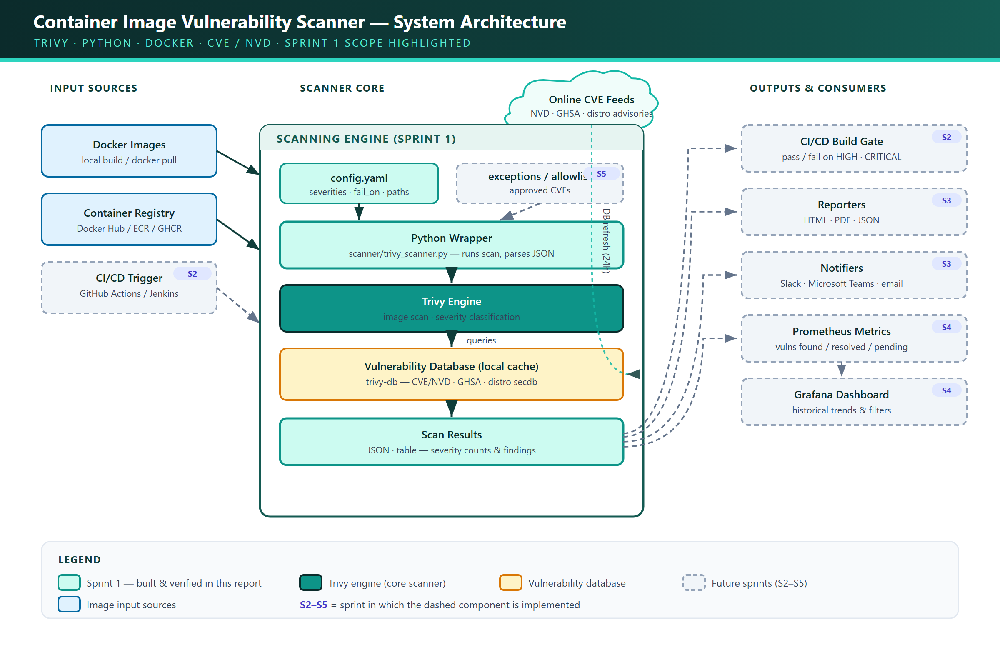

DevSecOps — Capstone Project
Sprint 1 — Setup & Basic Scanning
Establishing the project foundation: repository structure, a containerized Trivy scanning engine, a Python wrapper that parses CVE findings, and the first real vulnerability scans against public Docker images — all running locally at zero cloud cost.
Trivy · Python · Docker · CVE/NVD · Sprint 1 Report · 2026
This report documents Sprint 1 of the Container Image Vulnerability Scanner with Reporting capstone project. The sprint establishes the technical foundation on which all later sprints (CI/CD integration, reporting, notifications, the historical dashboard, and exception handling) are built. Four deliverables are completed: a versioned Git repository with a clean, scalable folder structure; the installation and configuration of the Trivy vulnerability scanner; a set of initial scans against well-known public Docker images to understand the scanner's output and logging; and an exploration of how Trivy integrates with the CVE / NVD vulnerability databases for real-time checks.
Every component is chosen to run entirely on a local workstation using Docker Desktop and Python 3.12, keeping the running cost at zero while remaining faithful to how a production DevSecOps pipeline would be structured. A thin Python wrapper around Trivy is introduced in this sprint so that, in later sprints, the same code path can emit structured JSON, drive CI/CD pass/fail gates, and feed metrics into the dashboard without rework.
Modern software ships as container images. Each image bundles an operating system layer, language runtimes, and application dependencies — any of which may contain known security vulnerabilities (CVEs). Without an automated gate, vulnerable images can reach production unnoticed. This project builds an automated vulnerability scanner that scans container images, integrates with CI/CD pipelines, reports findings, and tracks them over time, so that only secure images are deployed.
The project is delivered over six 20-hour sprints. Sprint 1 is the foundation — it produces a working scanner and a repository skeleton that every later sprint extends.
| Sprint | Focus | Status |
|---|---|---|
| 1 | Initial setup & basic vulnerability scanning | THIS REPORT |
| 2 | CI/CD pipeline integration (Jenkins, GitHub Actions) | PLANNED |
| 3 | Report generation & Slack/Teams notifications | PLANNED |
| 4 | Web dashboard (Prometheus + Grafana) | PLANNED |
| 5 | Scanner customization & exception handling | PLANNED |
| 6 | Documentation, testing & final deployment | PLANNED |
The diagram below shows the complete target system across all six sprints. Components built
and verified in Sprint 1 are highlighted in teal — the input sources, the
config.yaml-driven Python wrapper, the Trivy engine, the local CVE/NVD
vulnerability database, and the structured scan results. Components shown with a dashed border
are implemented in later sprints (tagged S2–S5), but the architecture
is designed up front so they slot in without rework.

config.yaml (severities, fail_on, output paths) and invokes the Trivy engine.The brief suggests Trivy or Clair. Trivy was selected because it is a single self-contained binary, requires no separate database server to operate, scans in seconds, and is the de-facto standard in modern CI/CD pipelines.
| Criterion | Trivy (chosen) | Clair |
|---|---|---|
| Setup | Single binary / one container — no server | Requires a Postgres DB + API service |
| Scan target | Images, filesystems, repos, IaC, secrets | Container images only |
| Speed | Seconds (local cached DB) | Slower; indexing workflow |
| CI/CD fit | First-class exit codes & SARIF/JSON | Needs a client (e.g. clairctl) |
| Output formats | table, json, sarif, cyclonedx, template | JSON via API |
| Component | Version | Purpose |
|---|---|---|
| Trivy | 0.50+ (latest stable) | Vulnerability scanning engine |
| Docker Desktop | 4.x (WSL2 backend) | Pull/build images, run Trivy container |
| Python | 3.12 | Scanner wrapper & JSON parsing |
| Git | 2.x | Version control |
| OS | Windows 11 + WSL2 | Development workstation |
| Vulnerability DB | trivy-db (CVE/NVD, GHSA, distro advisories) | Auto-pulled by Trivy |
Initialize a Git repository and lay out a folder structure that anticipates all six sprints — scanning, reporting, notifications, CI/CD, the dashboard, exceptions, tests, and documentation — so later work slots in cleanly.
container-vuln-scanner/
├── scanner/ # Python: wraps Trivy, parses JSON findings
│ ├── __init__.py
│ ├── trivy_scanner.py # core wrapper (Sprint 1)
│ └── models.py # Finding / ScanResult dataclasses
├── reporters/ # HTML / JSON / PDF report generators (Sprint 3)
├── notifiers/ # Slack / Teams / email integrations (Sprint 3)
├── exceptions/ # CVE allowlist / approved exceptions (Sprint 5)
│ └── allowlist.yaml
├── ci/ # GitHub Actions + Jenkinsfile (Sprint 2)
├── dashboard/ # Prometheus + Grafana configs (Sprint 4)
├── docker/ # Dockerfile for the scanner itself
├── tests/ # sample images list + unit tests
│ └── images.txt
├── docs/ # setup, usage, troubleshooting + screenshots
│ └── screenshots/
├── config.yaml # severity thresholds, output paths, webhooks
├── requirements.txt # Python dependencies
├── .gitignore
└── README.md# Create and enter the project folder
mkdir container-vuln-scanner; cd container-vuln-scanner
# Initialize Git
git init
git branch -M main
# Scaffold the directories
mkdir scanner, reporters, notifiers, exceptions, ci, dashboard, docker, tests
mkdir docs, docs/screenshots
# First commit
git add .
git commit -m "chore: initial project scaffold for Sprint 1"config.yamlA single declarative config drives the scanner's behaviour, so thresholds and paths are not
hard-coded. The fail_on key is what Sprint 2 will use to break a CI build.
# config.yaml — central project configuration
scanner:
engine: trivy
# Severities to include in reports
severities: [LOW, MEDIUM, HIGH, CRITICAL]
# Build fails if any finding is at or above this level (used in Sprint 2)
fail_on: HIGH
ignore_unfixed: false # include vulns with no fix available
timeout: "5m"
output:
dir: "./scan-results"
formats: [table, json]
images:
# Sample images scanned in Sprint 1
- nginx:latest
- python:3.12-slim
- alpine:3.19
- node:18
# Placeholders wired up in later sprints
notifications:
slack_webhook: "" # Sprint 3
exceptions_file: "exceptions/allowlist.yaml" # Sprint 5.gitignore# Scan artifacts & secrets should never be committed
scan-results/
*.log
.env
__pycache__/
*.pyc
.venv/
trivy-cache/VS Code Explorer showing the folder structure
Capture the VS Code Explorer panel with all folders (scanner, reporters, ci, dashboard, docs…) and config.yaml visible.
Terminal — git init & first commit
Capture the terminal output of git init and the first git commit.
Install Trivy so it can scan Docker images locally, and verify it can download its vulnerability database. Both a native Windows install and a Docker-based run are documented so the scan works on any machine — including CI runners in Sprint 2.
# --- Windows (PowerShell) via Chocolatey ---
choco install trivy -y
# --- or inside WSL2 / Linux (recommended for parity with CI) ---
sudo apt-get install -y wget gnupg
wget -qO - https://aquasecurity.github.io/trivy-repo/deb/public.key | \
sudo gpg --dearmor -o /usr/share/keyrings/trivy.gpg
echo "deb [signed-by=/usr/share/keyrings/trivy.gpg] \
https://aquasecurity.github.io/trivy-repo/deb generic main" | \
sudo tee /etc/apt/sources.list.d/trivy.list
sudo apt-get update && sudo apt-get install -y trivy
# Verify
trivy --versionRunning Trivy as a container avoids any host install — the exact approach reused on CI runners in Sprint 2. The Docker socket is mounted so Trivy can read locally-pulled images, and a named volume caches the vulnerability DB between runs.
docker run --rm \
-v /var/run/docker.sock:/var/run/docker.sock \
-v trivy-cache:/root/.cache/ \
aquasec/trivy:latest image nginx:latesttrivy --version
# Version: 0.50.x
# Vulnerability DB:
# Version: 2
# UpdatedAt: 2026-06-28 ...
# NextUpdate: 2026-06-29 ...Terminal — trivy --version
Capture the output of trivy --version showing the version and DB metadata.
trivy-db
from ghcr.io/aquasecurity/trivy-db into a local cache
(~/.cache/trivy). Subsequent scans are fully offline until the DB expires (every
24 hours), which is what makes scans fast and free.
Pull a few well-known public images, scan each with Trivy, and understand the structure of the output (severity counts, package, installed vs fixed version, CVE ID) and the scan logs.
docker pull nginx:latest
docker pull python:3.12-slim
docker pull alpine:3.19
docker pull node:18# Human-readable table (default)
trivy image nginx:latest
# Only show actionable severities
trivy image --severity HIGH,CRITICAL nginx:latest
# Only show vulnerabilities that have a fix available
trivy image --ignore-unfixed --severity HIGH,CRITICAL nginx:latestTrivy prints one section per detected target (the OS layer and each language ecosystem), followed by a table. A trimmed example:
nginx:latest (debian 12.x)
==========================
Total: 142 (UNKNOWN: 0, LOW: 95, MEDIUM: 33, HIGH: 12, CRITICAL: 2)
┌───────────────┬────────────────┬──────────┬──────────┬───────────────┬───────────────┐
│ Library │ Vulnerability │ Severity │ Status │ Installed Ver │ Fixed Ver │
├───────────────┼────────────────┼──────────┼──────────┼───────────────┼───────────────┤
│ libssl3 │ CVE-2024-XXXXX │ CRITICAL │ fixed │ 3.0.11-1 │ 3.0.13-1 │
│ libc-bin │ CVE-2023-XXXXX │ HIGH │ affected │ 2.36-9 │ │
│ zlib1g │ CVE-2023-XXXXX │ MEDIUM │ fixed │ 1:1.2.13.dfsg │ 1:1.2.13-1 │
└───────────────┴────────────────┴──────────┴──────────┴───────────────┴───────────────┘| Column | Meaning |
|---|---|
| Library | The vulnerable OS package or language dependency |
| Vulnerability | The CVE / advisory identifier (links to NVD) |
| Severity | CRITICAL HIGH MEDIUM LOW UNKNOWN |
| Status | fixed (an upgrade exists) or affected (no fix yet) |
| Installed Ver | Version currently in the image |
| Fixed Ver | Version that resolves the CVE (blank if none) |
JSON is what the Python wrapper (§7) and the Sprint 3 reporters will consume.
trivy image --format json --output scan-results/nginx.json nginx:latestTerminal — trivy image nginx:latest table output
Capture the full scan table with the severity summary line (Total: … CRITICAL: …).
nginx:latest with the severity summary.Scan of a second image (e.g. python:3.12-slim)
Capture a HIGH,CRITICAL-filtered scan of a different image to show comparison.
The generated nginx.json open in VS Code
Understand the data sources behind Trivy's findings and verify that the local vulnerability database can be refreshed so scans reflect the latest CVEs.
Trivy aggregates many advisory feeds and maps them back to the canonical CVE / NVD identifiers:
| Source | Provides |
|---|---|
| NVD (National Vulnerability Database) | Canonical CVE records & CVSS scores |
| GitHub Advisory Database (GHSA) | Language-package advisories (npm, PyPI, etc.) |
| Distro security trackers | Debian, Ubuntu, Alpine (secdb), RHEL, Amazon Linux |
| Vendor feeds | OSV, language-ecosystem databases |
# Download / refresh only the vulnerability DB (no scan)
trivy image --download-db-only
# Inspect what the local cache currently holds
trivy version # shows DB Version + UpdatedAt + NextUpdate
# Force a scan to skip the DB update (air-gapped / offline runs)
trivy image --skip-db-update nginx:latest--download-db-only as a cached step so each pipeline
run checks images against an up-to-date CVE set without re-downloading on every build.
Each CVE carries a CVSS base score (0.0–10.0). Trivy maps the score to the severity labels this project gates on:
| Severity | Typical CVSS range | Project policy (Sprint 2) |
|---|---|---|
| CRITICAL | 9.0 – 10.0 | Fail the build |
| HIGH | 7.0 – 8.9 | Fail the build (fail_on: HIGH) |
| MEDIUM | 4.0 – 6.9 | Report only |
| LOW | 0.1 – 3.9 | Report only |
Terminal — trivy image --download-db-only
Capture the DB download/refresh output and the "vulnerability DB" success line.
To make Sprint 2 (CI/CD) and Sprint 3 (reporting) clean, Sprint 1 introduces a small Python wrapper that runs Trivy, parses its JSON, and summarises severity counts. It deliberately does one thing well; reporting and notifications are added later without changing this core.
scanner/trivy_scanner.py"""
Sprint 1 — Core Trivy wrapper.
Runs Trivy against an image and returns a structured summary.
"""
import json
import logging
import subprocess
from collections import Counter
logging.basicConfig(level=logging.INFO, format="%(asctime)s %(levelname)s %(message)s")
logger = logging.getLogger("trivy_scanner")
SEVERITIES = ["CRITICAL", "HIGH", "MEDIUM", "LOW", "UNKNOWN"]
def scan_image(image: str, severities=None, ignore_unfixed: bool = False) -> dict:
"""Scan a single container image and return parsed results."""
sev = ",".join(severities or SEVERITIES)
cmd = ["trivy", "image", "--quiet", "--format", "json", "--severity", sev]
if ignore_unfixed:
cmd.append("--ignore-unfixed")
cmd.append(image)
logger.info("Scanning image=%s severities=%s", image, sev)
proc = subprocess.run(cmd, capture_output=True, text=True)
if proc.returncode not in (0, 1): # 1 = vulns found (still valid output)
logger.error("Trivy failed: %s", proc.stderr.strip())
raise RuntimeError(proc.stderr.strip())
data = json.loads(proc.stdout or "{}")
counts = Counter()
findings = []
for result in data.get("Results", []):
for v in result.get("Vulnerabilities", []) or []:
counts[v.get("Severity", "UNKNOWN")] += 1
findings.append({
"id": v.get("VulnerabilityID"),
"pkg": v.get("PkgName"),
"severity": v.get("Severity"),
"installed": v.get("InstalledVersion"),
"fixed": v.get("FixedVersion", ""),
})
summary = {sev_level: counts.get(sev_level, 0) for sev_level in SEVERITIES}
logger.info("Done image=%s summary=%s", image, summary)
return {"image": image, "summary": summary, "findings": findings}
if __name__ == "__main__":
import sys
result = scan_image(sys.argv[1] if len(sys.argv) > 1 else "nginx:latest")
print(json.dumps(result["summary"], indent=2))python -m scanner.trivy_scanner nginx:latest
# 2026-06-28 ... INFO Scanning image=nginx:latest severities=CRITICAL,HIGH,...
# 2026-06-28 ... INFO Done image=nginx:latest summary={'CRITICAL': 2, 'HIGH': 12, ...}
# {
# "CRITICAL": 2,
# "HIGH": 12,
# "MEDIUM": 33,
# "LOW": 95,
# "UNKNOWN": 0
# }Terminal — Python wrapper run with severity summary
Capture python -m scanner.trivy_scanner nginx:latest printing the JSON severity summary.
1 when vulnerabilities are
found — that is a successful scan, not an error. The wrapper treats 0 and
1 as valid; Sprint 2 will instead use Trivy's --exit-code with
--severity to deliberately fail a CI build.
| # | Deliverable | Evidence | Status |
|---|---|---|---|
| 1 | Repository & folder structure | Figures 3.1, 3.2 | DONE |
| 2 | Trivy installed & configured | Figure 4.1 | DONE |
| 3 | Sample images scanned, output understood | Figures 5.1–5.3 | DONE |
| 4 | CVE/NVD database explored & refreshed | Figure 6.1 | DONE |
| + | Python wrapper foundation (bonus) | Figure 7.1 | DONE |
Illustrative severity counts across the four sample images (your actual numbers will vary as the DB updates — capture the real values from your scans):
| Image | Base | Critical | High | Medium | Low |
|---|---|---|---|---|---|
alpine:3.19 | Alpine | 0 | 0 | 1 | 2 |
python:3.12-slim | Debian | 1 | 4 | 20 | 55 |
nginx:latest | Debian | 2 | 12 | 33 | 95 |
node:18 | Debian | 3 | 18 | 40 | 110 |
alpine) carry dramatically
fewer vulnerabilities than full images (node:18). This observation directly informs
the project's later recommendation engine — choosing slim/distroless bases is the single most
effective way to reduce an image's attack surface.
| # | Symptom | Root cause | Resolution |
|---|---|---|---|
| 1 | FATAL ... failed to download vulnerability DB |
GHCR rate-limiting or no internet on first run. | Retry, or pre-pull with trivy image --download-db-only; then use --skip-db-update offline. |
| 2 | permission denied /var/run/docker.sock (container run) |
Trivy container can't reach the Docker daemon. | Ensure Docker Desktop is running and the socket is mounted: -v /var/run/docker.sock:/var/run/docker.sock. |
| 3 | Scan re-downloads the DB every run (slow) | No persistent cache volume in container mode. | Mount a named cache volume: -v trivy-cache:/root/.cache/. |
| 4 | Python wrapper raised on a "failed" scan | Trivy returns exit code 1 when vulns are found. |
Treat exit codes 0 and 1 as success; only fail on other codes. |
| 5 | Too much noise in the report | LOW/unfixed vulns dominate the output. | Filter with --severity HIGH,CRITICAL and --ignore-unfixed for actionable results. |
All four Sprint 1 objectives are complete. A Git repository with a forward-looking folder structure is in place; Trivy is installed and verified by both native and container methods; four public images were pulled and scanned, and their severity output and logs are understood; and the CVE/NVD-backed vulnerability database was explored and refreshed. A bonus Python wrapper turns Trivy's JSON into a clean severity summary, giving Sprint 2 a tested foundation to build CI/CD gating on. Everything runs locally at zero cost.
trivy image --exit-code 1 --severity HIGH,CRITICAL to fail builds on serious findings.config.yaml (fail_on).